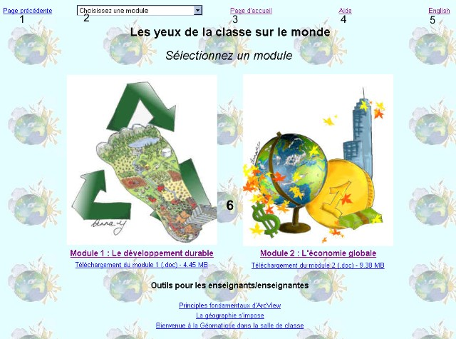
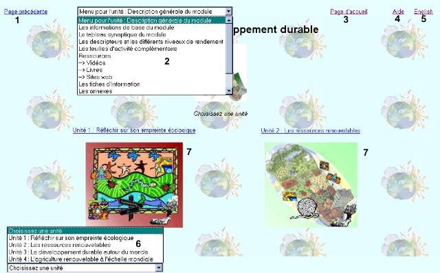

Les yeux de la classe sur le
monde - Aide
Vous trouverez ici chacune des pages principales et comment naviguer sur ces
pages. Si vous avez encore des questions sur comment naviguer sur une page en
particulier, veuillez demander à l’administrateur
du site. Toute question valable qui pourrait aider
d’autres internautes comme vous sera placer sur la page QFD (Questions fréquemment
demandées).
Écran de sélection des modules

|
Numéro de l’item |
Nom
de
l’item |
Fonction |
|
1 |
Bouton Page précédente |
Cliquez sur ce lien pour retourner à la page précédente. Ce
lien a la même fonction que le bouton Arrière (Back) sur votre fureteur. |
|
2 |
Sélection du module Menu déroulant |
Ce menu vous permet de choisir le module que vous désirez
voir et les principaux choix du module. |
|
3 |
Bouton Page d’accueil |
Cliquez sur ce lien pour aller à la page d’accueil. |
|
4 |
Bouton Aide |
Cliquez sur ce lien pour voir la page que vous regardez
en ce moment. |
|
5 |
Bouton Anglais |
Cliquez sur ce lien pour aller aux modules en version
anglaise. |
|
6 |
Sélection du module |
Cliquez sur le module que vous désirez ouvrir. |
Écran de sélection de l’unité

|
Numéro de l’item |
Nom
de
l’item |
Fonction |
|
1 |
Bouton Page précédente |
Cliquez sur ce lien pour retourner à la page précédente. Ce
lien a la même fonction que le bouton Arrière (Back) sur votre fureteur. |
|
2 |
Sélection du module Menu déroulant |
Le menu déroulant du module vous permet de passer
d’un module à l’autre. Il vous permet aussi de consulter les pages
d’informations générales à un module particulier. |
|
3 |
Bouton Page d’accueil |
Cliquez sur ce lien pour aller à la page d’accueil. |
|
4 |
Bouton Aide |
Cliquez sur ce lien pour voir la page que vous regardez
en ce moment. |
|
5 |
Bouton Anglais |
Cliquez sur ce lien pour aller aux modules en version
anglaise. |
|
6 |
Menu déroulant
de
l’unité |
Utilisez ce
menu
déroulant pour sélectionner l’unité que vous
désirez voir. Une fois que vous avez activé
l’unité vous pouvez accéder les pages d’activités et les outils
pour les enseignants et enseignantes. |
|
7 |
Sélection d’une unité |
Choisissez une unité sans avoir à utiliser le menu déroulant. |